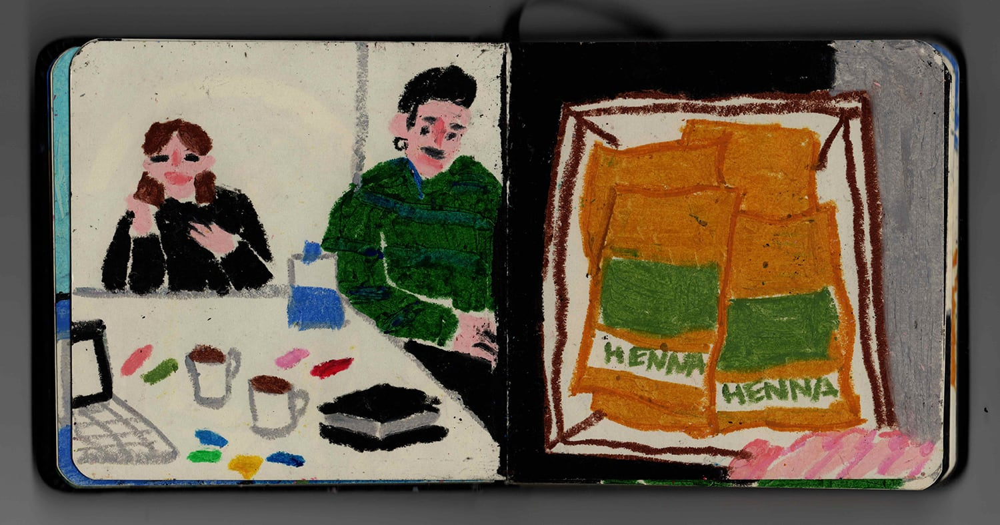
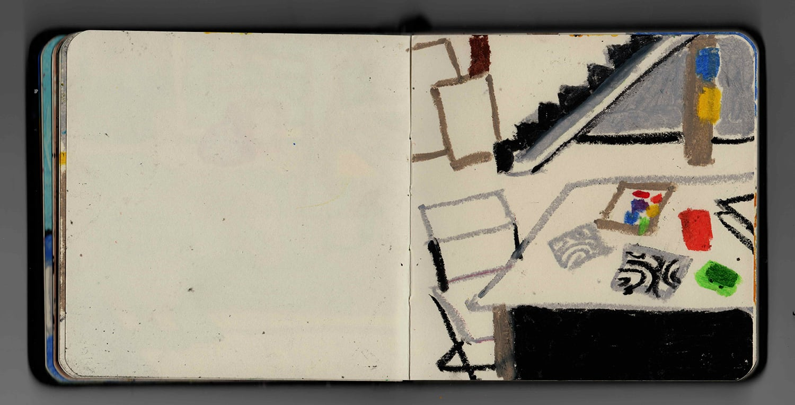

2018
28th October
Today was the end of the sequential sketchbook project. We were introduced to a new brief — routine sketchbook. I like this new idea more: each of us should choose a system of documenting the same object/action/time span and register it every day throughout the month with any preferable medium.
My groupmates now tend to choose photography majorly, but I decided to use this brief as a reason to start drawing on a daily basis. It is way easier when you don't have to look for a subject — you just picture whatever happens in a chosen location/hour. Unlike the sequential sketchbook, there is no space to experiment with materials, but only consistent observation.
I plan to pick two times (morning and evening), set alarms for these hours, and draw anything I would be looking at by the time the alarm rings. The exact time should be something like 14-00 and 18-00, because, I guess, most of the interesting events happen to me in the middle of the day, rather than in the beginning or end.
Tomorrow I'm gonna try my material of choice — oil pastels. I really hope the inaccuracy of this tool will eventually liberate me from a fear to draw something ugly. The only aspect I worry about is Britanka — I don't want to find myself on a session when my alarm rings, because in this case I wouldn't be able to draw the scene right away. Have to test time as well before picking anything in particular.
My groupmates now tend to choose photography majorly, but I decided to use this brief as a reason to start drawing on a daily basis. It is way easier when you don't have to look for a subject — you just picture whatever happens in a chosen location/hour. Unlike the sequential sketchbook, there is no space to experiment with materials, but only consistent observation.
I plan to pick two times (morning and evening), set alarms for these hours, and draw anything I would be looking at by the time the alarm rings. The exact time should be something like 14-00 and 18-00, because, I guess, most of the interesting events happen to me in the middle of the day, rather than in the beginning or end.
Tomorrow I'm gonna try my material of choice — oil pastels. I really hope the inaccuracy of this tool will eventually liberate me from a fear to draw something ugly. The only aspect I worry about is Britanka — I don't want to find myself on a session when my alarm rings, because in this case I wouldn't be able to draw the scene right away. Have to test time as well before picking anything in particular.
01:01
29th October
Due to the fact that I don't practice image-making, I don't have my own style. I definitely have a photographic style and a specific approach to my texts, because I am used to it. I don't ask myself how to take a photo of an object to maintain my vision.
But drawings are also very important. I feel like they can teach me a lot more and influence my art. I am now in a stage of approaching a new period of my creative life, I am sure of it. And I need to cross this line to find myself on the other side of this chasm. Because thinking about my idleness keep hurting me every time I let myself consider this aspect of being.
But drawings are also very important. I feel like they can teach me a lot more and influence my art. I am now in a stage of approaching a new period of my creative life, I am sure of it. And I need to cross this line to find myself on the other side of this chasm. Because thinking about my idleness keep hurting me every time I let myself consider this aspect of being.
23:34
31st October
An exercise—depicting the same object in different surrounding. Routine process yet I love the result and how context affect the perception of a chosen thing.
19:44
1st November
D A Y 1
14:00 — Masha Vorontsova in a silly sweatshirt
18:00 — Scene seen on Yauza bank-side near Artplay free parking (while crossing the road)
14:00 — Masha Vorontsova in a silly sweatshirt
18:00 — Scene seen on Yauza bank-side near Artplay free parking (while crossing the road)
22:12
2nd November
D A Y 2
14:00 — Compiling a presentation of a fictional exhibition devoted to art of mentally ill people (for C&CS). Based on Yayoi Kusama as a starting point. Henry Darger is amazing, by the way. In a sense that he approaches his absolutely schizophrenic idea (speaking of 'The Story of the Vivian Girls', of course) with such passion and elaboration, that the extent of absurdity eventually becomes fascinating.
18:00 — Screen-printing 'Added Value' condom posters, the first layer of the first poster ('Threesome'). Trembling with anticipation, because what I see now already blows up my mind (with beauty).
14:00 — Compiling a presentation of a fictional exhibition devoted to art of mentally ill people (for C&CS). Based on Yayoi Kusama as a starting point. Henry Darger is amazing, by the way. In a sense that he approaches his absolutely schizophrenic idea (speaking of 'The Story of the Vivian Girls', of course) with such passion and elaboration, that the extent of absurdity eventually becomes fascinating.
18:00 — Screen-printing 'Added Value' condom posters, the first layer of the first poster ('Threesome'). Trembling with anticipation, because what I see now already blows up my mind (with beauty).
19:04
Routine sketchbook—amazing.
Oil pastels—perfect.
Oil pastels—perfect.
23:41
3rd November
D A Y 3
14:00 — Dacha with friends, phenomenally warm November, I love Lora and the fact she now lives with us and keeps Misha company; found an abandoned house with beautifully designed Soviet books.
I was way too busy having fun to depict my life at 18:00. But I don't want to lie to my sketchbook, so the pages I couldn't fill right away would stay empty.
14:00 — Dacha with friends, phenomenally warm November, I love Lora and the fact she now lives with us and keeps Misha company; found an abandoned house with beautifully designed Soviet books.
I was way too busy having fun to depict my life at 18:00. But I don't want to lie to my sketchbook, so the pages I couldn't fill right away would stay empty.
23:18
4th November
D A Y 4
14:00 — Halloween party preparation was over in Illustration baseroom, but the balloons stayed.
18:00 — Shia eating chocolate; home workplace.
14:00 — Halloween party preparation was over in Illustration baseroom, but the balloons stayed.
18:00 — Shia eating chocolate; home workplace.
23:18
5th November
D A Y 5
14:00 — Screen-printing the second layer of my first poster for Added Value.
18:00 — Road signs are my favourite street graphics.
14:00 — Screen-printing the second layer of my first poster for Added Value.
18:00 — Road signs are my favourite street graphics.
23:18
6th November
D A Y 6
14:00 — Daytime nap, dacha bedroom.
14:00 — Daytime nap, dacha bedroom.
23:18
7th November
D A Y 7
14:00 — Getting ready for Kyiv trip, wandering around Komsomolskaya.
18:00 — McDonalds stop on the way to Kyiv; Hain and Yulia wearing the same coat to get warm.
14:00 — Getting ready for Kyiv trip, wandering around Komsomolskaya.
18:00 — McDonalds stop on the way to Kyiv; Hain and Yulia wearing the same coat to get warm.
23:18
8th November
D A Y 8
14:00 — Eating at Orang+Utan, already arrived to Kyiv.
18:00 — We were trying to find vegan pastry-shop near our apartment (and eventually we did).
14:00 — Eating at Orang+Utan, already arrived to Kyiv.
18:00 — We were trying to find vegan pastry-shop near our apartment (and eventually we did).
23:18
9th November
D A Y 9
14:00 — A building near Hasan's falafel place; 'Odyag s Evropy' thrift shop trip to Lisova metro station.
18:00 — Observing the most beautiful ass in the world; after-sex sketch.
14:00 — A building near Hasan's falafel place; 'Odyag s Evropy' thrift shop trip to Lisova metro station.
18:00 — Observing the most beautiful ass in the world; after-sex sketch.
23:18
10th November
D A Y 10
14:00 — We were to eat in the city centre; got stuck in a traffic jam instead.
18:00 — Visiting another Kyiv suburban market; arrived too late, but I bought myself a nice pair of gloves resembling a sky full of stars.
14:00 — We were to eat in the city centre; got stuck in a traffic jam instead.
18:00 — Visiting another Kyiv suburban market; arrived too late, but I bought myself a nice pair of gloves resembling a sky full of stars.
23:18
11th November
D A Y 11
14:00 — Listening to 'Backdoor Man' after buying a silicone lube for anal sex.
18:00 — Hain, Yulia, and Shia with People's Friendship Arch on the background; going to specialty coffee shop.
14:00 — Listening to 'Backdoor Man' after buying a silicone lube for anal sex.
18:00 — Hain, Yulia, and Shia with People's Friendship Arch on the background; going to specialty coffee shop.
23:18
12th November

D A Y 12
14:00 — Me drawing with oil pastels and working; guys sitting and waiting for me to finish.
18:00 — 10 packs of kratom finally received.
23:18
13th November
D A Y 13
14:00 — Shia trying to sneak out to the bathroom being naked.
18:00 — Last hour in Kyiv; eating extremely delicious black ice-cream.
14:00 — Shia trying to sneak out to the bathroom being naked.
18:00 — Last hour in Kyiv; eating extremely delicious black ice-cream.
23:18
14th November
D A Y 14
14:00 — First meeting with Claudia Doms and image+text workshop.
18:00 — Meeting with my old friend Kaelte who I hadn't seen for 5 years.
14:00 — First meeting with Claudia Doms and image+text workshop.
18:00 — Meeting with my old friend Kaelte who I hadn't seen for 5 years.
23:18
15th November
D A Y 15
14:00 — Missing Shia unbearably, crying, depressed, and sleeping at daytime.
18:00 — With Masha and Seryozha in the elevator, house in Sokolniki district.
14:00 — Missing Shia unbearably, crying, depressed, and sleeping at daytime.
18:00 — With Masha and Seryozha in the elevator, house in Sokolniki district.
23:18
16th November
D A Y 16
14:00 — Shia tides up in my room.
18:00 — Working together with Shia, sitting on a couch, compiling a portfolio.
14:00 — Shia tides up in my room.
18:00 — Working together with Shia, sitting on a couch, compiling a portfolio.
23:18
17th November

18:00 — Visiting New Tretyakov gallery with my beloved friends (Grisha, Satu, Yuka, Sasha, Shia); exhibition devoted to Mikhail Larionov and Natalia Goncharova body of work.
23:18
18th November
D A Y 18
14:00 — Shia is about to take a driver's seat in my car; my boy gradually turning into a skilful driver.
18:00 — First time in ceramic workshop, making my fingerprint tiles.
14:00 — Shia is about to take a driver's seat in my car; my boy gradually turning into a skilful driver.
18:00 — First time in ceramic workshop, making my fingerprint tiles.
23:18
19th November

D A Y 19
18:00 — Keep working on fingerprint tiles; the second one in the making.
23:18
20th November
D A Y 20
18:00 — Another day in ceramic studio.
18:00 — Another day in ceramic studio.
23:18
21st November
D A Y 21
18:00 — Buying myself a pie in Lebedev's cafe.
18:00 — Buying myself a pie in Lebedev's cafe.
23:18
25th November
My sketchbook routine officially came to an end, and as I am being now occupied with 'The Body Machine' project and the upcoming pop-show + assessment, I doubt that I can afford drawing on a daily basis from now on. But I loved this practice so much! And it changed me radically as an artist, made me love depicting my surroundings again! Next step is to incorporate this experience in my ordinary life and probably try to mix oil pastels with more mediums (gouache, watercolour, pencils).
23:18